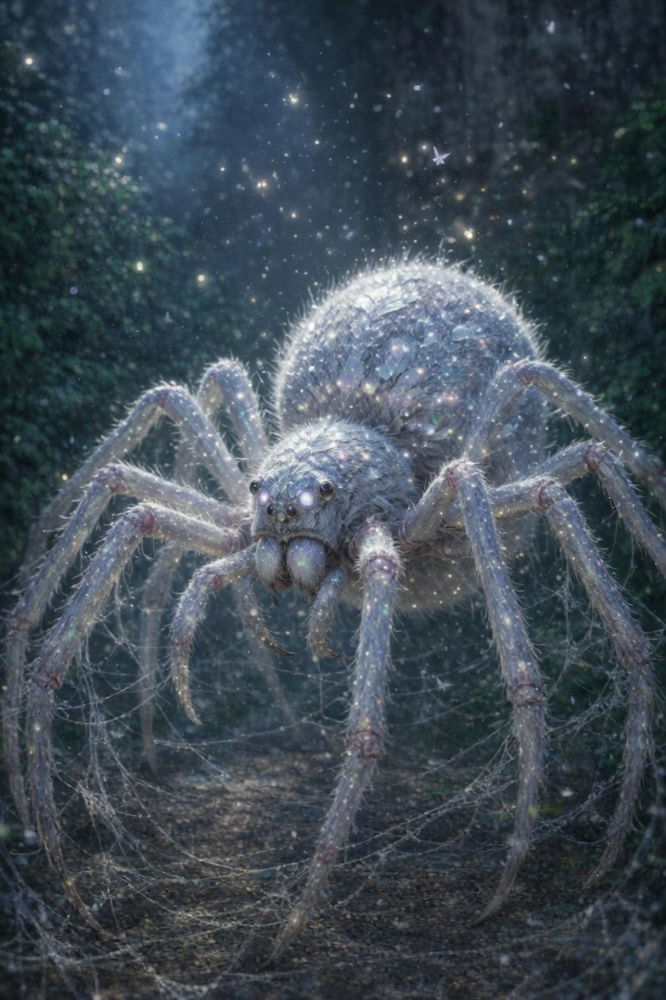
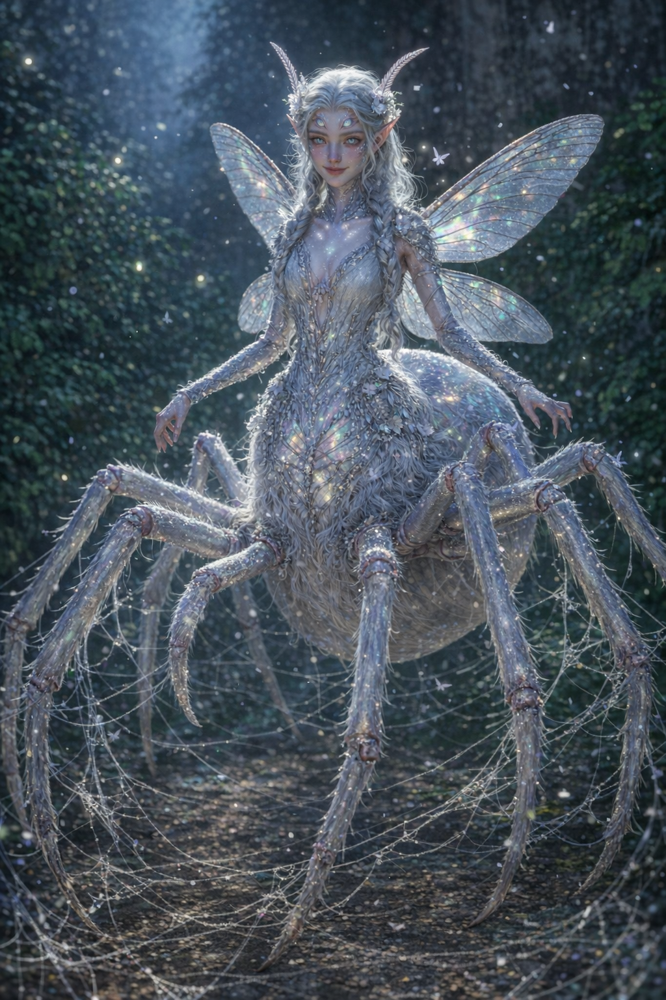
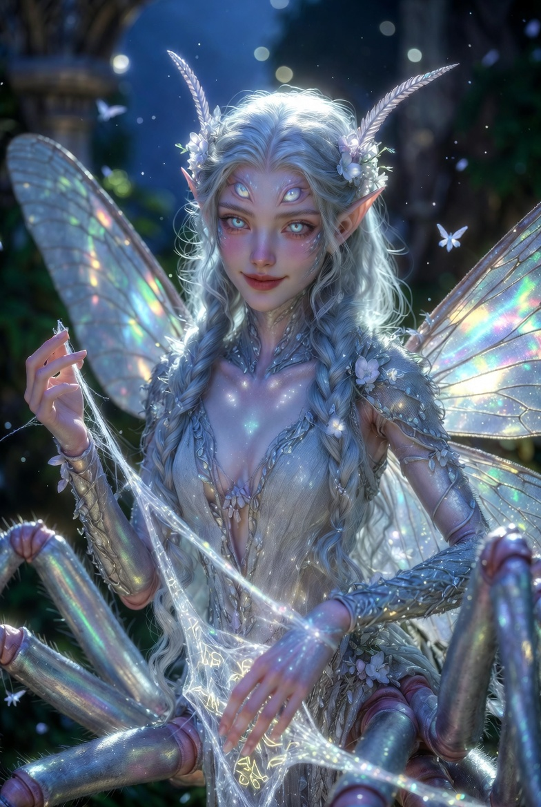

Арианна Лунная Роса
Арианка
- Возраст
- 27–29 лет; После открытия Врат — 37–39 лет
- Пол
- Женский
- Рост
- 175–178 см (без учёта ног)
- Специальность
- Хранительница границ и жрица Изначальной, соуправительница сети заповедников «Оазис», мастер плетения информационных и защитных сетей. Дипломат и координатор безопасности заповедников. Одна из трёх супруг тройственного союза.
Внешность (кратко)
Изящная и завораживающая арианка с серебристой перламутровой кожей, которая мягко светится в лунном свете. Многочисленные (восемь) перламутрово-серебряные глаза, переливающиеся всеми оттенками лунного света. Длинные серебристые волосы, часто заплетённые в сложные косы с живыми цветами и нитями. Обладает четырьмя руками и четырьмя стройными ногами, позволяющими двигаться с невероятной грацией. На спине — полупрозрачные серебристые крылья, напоминающие крылья ночной бабочки. Носит лёгкие, струящиеся одеяния из серебряных и лунных тканей, часто украшенные живыми нитями и кристаллами.
Предыстория
Высокородная представительница Дома Лунной Росы — древнего паучьего клана, издревле связанного с Хрустальными островами и служившего жрицами Изначальной. Мастер Тиаго специально организовал её встречу с Рури. Быстро прониклась искренним интересом к работе Рури и его связи с животными. Стала его близкой спутницей, а позже — одной из ключевых участниц ритуала открытия Хрустальных Врат. Её род сохранил древние знания о границах между мирами. Вошла в тройственный союз с Рури и Лираной, став жрицей и хранительницей их семьи.
Характер
Мягкая, нежная и невероятно заботливая. Обладает глубоким спокойствием и мудростью. Очень тактична, умеет слушать и поддерживать. Несмотря на внешнюю хрупкость, обладает сильной внутренней волей и железной преданностью семье и долгу. Любит красоту природы, искусство плетения и тихие моменты под луной. Немного застенчива в больших компаниях, но в кругу близких — тёплая и игривая. Искренне восхищается талантами Рури и гармонично дополняет его характер.
Особая способность
Мастер плетения многослойных магических и информационных сетей — может создавать защитные паутины, которые обнаруживают угрозы, скрывают заповедники или передают сообщения на огромные расстояния. Её многомерное зрение позволяет видеть скрытые магические потоки, ауры и «нити судьбы». Как жрица Изначальной, способна проводить ритуалы гармонизации природы и стабилизации границ между мирами. В сочетании с силами Рури и Лираны усиливает духовную связь всех троих и помогает поддерживать баланс в заповедниках. Её крылья позволяют бесшумно перемещаться и создавать иллюзорные покровы.
Positive Prompt (для генерации):
masterpiece, best quality, ultra-detailed, 8k, absurdres, stunning female arianka (anthropomorphic spider-folk), 28 years old, ethereal and graceful, tall elegant humanoid upper body 175-178 cm, silver pearlescent skin that softly glows under moonlight, eight beautiful large pearlescent-silver eyes arranged in two rows, eyes shimmer with all shades of moonlight, long flowing silver hair in intricate braids decorated with living flowers and glowing threads, four graceful arms and four slender elegant legs, perfect symmetrical spider-like lower body, large translucent silver moth-like wings on her back, wings with delicate vein patterns, gentle caring expression, soft warm smile, wise and serene look, wearing light flowing silver and lunar fabrics, elegant robes adorned with living threads, crystals and moonflowers, delicate glowing magical webs and runes floating around her, standing in graceful pose with multiple arms gently posed, one pair holding a glowing thread, soft moonlight illumination, floating silver particles and tiny luminous moths, background of mystical night oasis with crystal gates and ancient trees, highly detailed skin texture, intricate eye details, realistic fur-like hair strands, perfect anatomy, sharp focus, cinematic ethereal lighting, iridescent highlights
Negative prompt (для генерации:)
lowres, bad anatomy, bad hands, deformed, mutated, extra limbs beyond eight, missing limbs, blurry, low quality, worst quality, text, watermark, signature, error, cropped, jpeg artifacts, ugly, disfigured, morbid, gross proportions, malformed limbs, fused fingers, cartoon, anime, 3d render, cgi, plastic skin, doll-like, overexposed, underexposed, grainy, noisy, child, underage, loli, shota, nsfw, nude, fully naked, exposed, erotic pose, aroused
Flux Positive Prompt (для генерации):
A breathtaking ethereal portrait of Arianna Moon Dew Sand Wind, a beautiful female arianka (winged spider-folk) around 28 years old. She has a graceful tall humanoid upper body with silver pearlescent skin that gently glows in moonlight. She possesses eight large, mesmerizing pearlescent-silver eyes arranged in two rows that shimmer with lunar colors. Her long silver hair is styled in intricate braids adorned with living flowers and glowing threads. She has four elegant arms and four slender graceful legs, giving her incredible poise and mobility. On her back are large translucent silver wings resembling those of a night moth, with delicate vein patterns. She wears light flowing robes made of silver and lunar fabrics, decorated with living threads, crystals and moonflowers. Her expression is gentle, caring and serene, with a soft warm smile. She is surrounded by delicate glowing magical webs and floating silver particles. Soft moonlight bathes the scene, creating an atmosphere of quiet wisdom and mystical beauty. Night oasis with ancient trees and distant crystal gates in the background. Masterpiece, intricate details on eyes, skin and wings, highly detailed, cinematic lighting, fantasy concept art, magical and tender atmosphere.
Flux Negative Prompt (для генерации):
blurry, low quality, deformed, bad anatomy, extra limbs, missing limbs, fused fingers, mutated hands, poorly drawn face, bad proportions, text, watermark, logo, signature, cartoon, anime, 3d render, plastic, doll-like, child, underage, loli, nude, fully naked, explicit, erotic pose